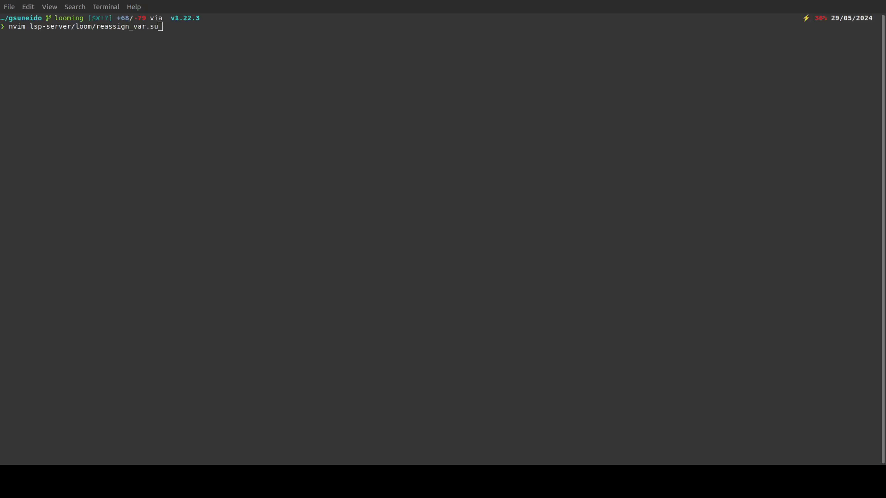
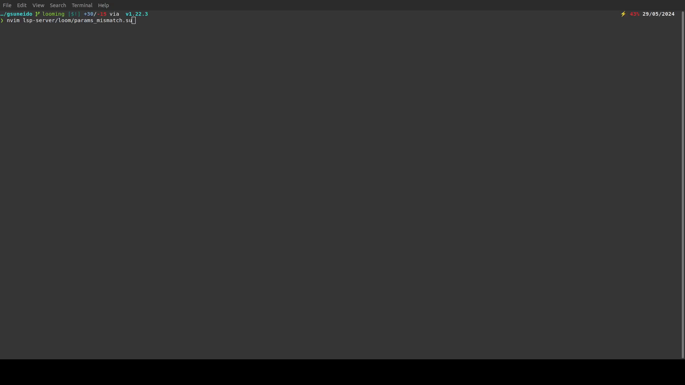
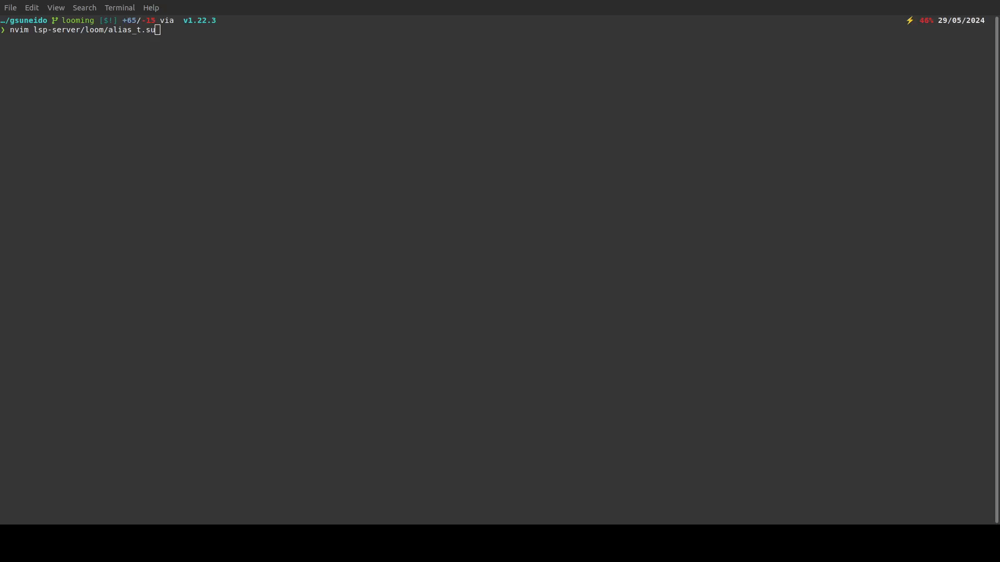
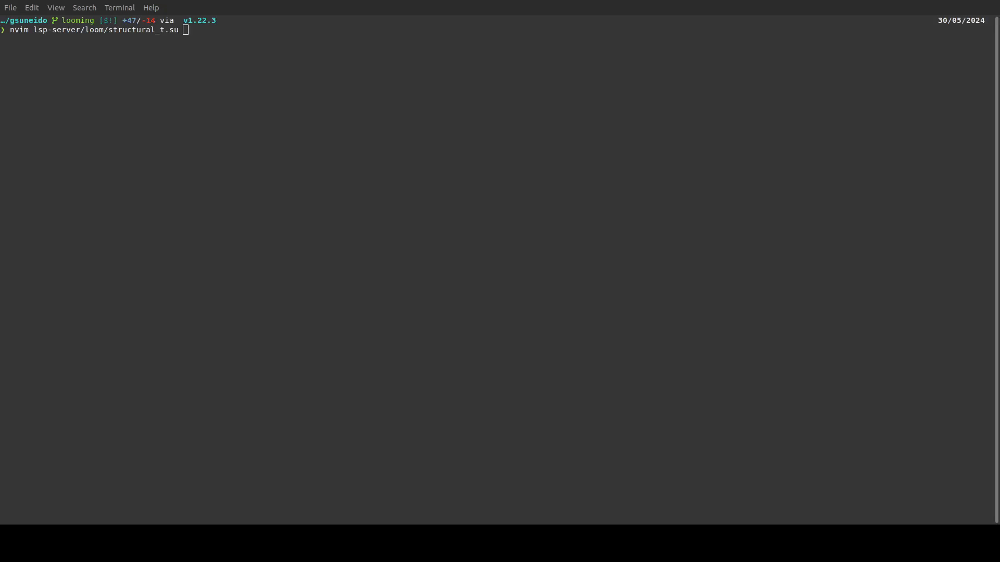

Acknowledgements
I acknowledge that the University of Saskatchewan is located on Treaty 6 Territory and the Homeland of the Métis. I express my respect and gratitude to the First Nations and Métis peoples of this land.
I would like to extend my heartfelt thanks to Andrew McKinley who helped me with parts of the gSuneido compiler and providing valuable feedback throughout the project.
I'd also like to thank the University of Saskatchewan's Engineering Department and Dr. Catherine Niu and Dr. Mandy Fehr for providing the opportunity to conduct my research project under their mentorship. Their expertise and encouragement have been instrumental in the completion of this work.
Demo GIFs



{kind=link}

[1] https://www.huy.rocks/everyday/04-01-2022-typescript-how-the-compiler-compiles
[2] https://arxiv.org/abs/2208.14755
[3] https://web.engr.oregonstate.edu/~erwig/papers/VisualTypeInf_JVLC06.pdf
[4] https://en.wikipedia.org/wiki/Covariance_and_contravariance_(computer_science)
[5] https://www.typescriptlang.org/docs/handbook/utility-types.html
[6] https://en.wikipedia.org/wiki/Type_erasure
[7] https://en.wikipedia.org/wiki/Hindley%E2%80%93Milner_type_system
[8] https://en.wikipedia.org/wiki/Liskov_substitution_principle
[9] https://en.wikipedia.org/wiki/Turing_completeness
[10] https://en.wikipedia.org/wiki/Type_safety
[11] https://sdleffler.github.io/RustTypeSystemTuringComplete/
[12] https://www.youtube.com/watch?v=XQHGRvuD1hY
[13] https://bracha.org/pluggableTypesPosition.pdf
[14] https://www.hpi.uni-potsdam.de/hirschfeld/publications/mediaGellerHirschfeldBracha_2010_PatternMatchingForAnObjectOrientedAndDynamicallyTypedProgrammingLanguage_HPI36.pdf
[15] https://peps.python.org/pep-0484/
[16] https://godotengine.org/article/optional-typing-gdscript/
[17] https://flow.org/
[18] https://arxiv.org/abs/1306.6032
[19] https://www.youtube.com/watch?v=0dGkkbVnVyg
[20] https://www.youtube.com/watch?v=LhsXA3il4_Q
[21] https://forums.swift.org/t/swift-type-checking-is-undecidable/39024
[22] https://web.archive.org/web/20200810001446/https://typing-is-hard.ch/
[23] https://effectivetypescript.com/2021/05/06/unsoundness/
[24] https://dl.acm.org/doi/10.1016/j.cl.2008.06.003
[25] https://ieeexplore.ieee.org/document/10298459
[26] https://sqlite.org/whybytecode.html
[27] https://recursion.wtf/posts/rust_schemes/
[28] https://ieeexplore.ieee.org/document/8802796
[29] Bejleri, Andi and Susan Eisenbach. “Type Systems of Scripting Languages.” (2007).
[30] https://dl.acm.org/doi/10.1145/1167515.1167479
[31] https://dl.acm.org/doi/10.1145/1408681.1408688
[32] https://www.sciencedirect.com/science/article/pii/S2352220816300785?via%3Dihub
[33] https://pdfs.semanticscholar.org/4bb1/9e3fcf95c0b50e62a7bb313b049da7c03120.pdf
[34] https://dl.acm.org/doi/10.1145/2837614.2837630
[35] https://web.archive.org/web/20180412231347/http://www.thinkmind.org/download.php?articleid=soft_v9_n34_2016_11
[36] https://dl.acm.org/doi/10.1145/3093334.2989227
[37] https://uwspace.uwaterloo.ca/bitstream/handle/10012/10409/Brotherston_Daniel.pdf?isAllowed=y&sequence=3
[38] https://www2.it.uu.se/workshop/nool16/nool16-paper4.pdf
[39] https://dl.acm.org/doi/10.1145/3093333.3009886
[40] https://www.sciencedirect.com/science/article/abs/pii/S0020019010003984?via%3Dihub
[41] https://dl.acm.org/doi/10.1145/1982185.1982464